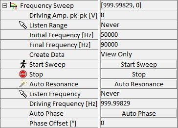

|
频率扫描
|
频率扫描改变锁相放大器输出信号的频率，以确定检测信号的振幅和相位作为激励频率函数的响应。例如，在 AC 模式中，这用于找到悬臂梁的共振频率。振幅和相位显示在图谱查看器中。
更多信息（操作指南）：

开始扫描
此参数启动频率扫描。
监听 范围
从显示频率扫描的图谱中，可以选择频率范围，相应的值将自动输入为初始频率和终止频率。
初始频率 [Hz]
此参数定义频率扫描的初始频率。
终止频率 [Hz]
此参数定义频率扫描的终止频率。
分割数
此参数定义初始频率和终止频率之间的步数。
创建数据
此参数允许用户仅查看频率扫描或将频率扫描保存为项目管理器中的图谱数据对象。
自动共振
此按钮启动自动共振程序。它自动确定 AFM AC 模式悬臂梁的共振频率。与频率扫描类似，锁相放大器输出信号的频率被改变，并在每个频率测量悬臂梁的振幅。在此程序中，在较大的频率范围（通常从 10 kHz 到 500 kHz）上执行粗频率扫描。当接近悬臂梁的最大振幅时，执行第二次精细频率扫描以确定精确的共振频率。
图谱查看器中显示的图谱显示共振频率附近的振幅和相位变化。共振频率自动设置为驱动频率，相位偏移调整为零。
初始起始频率 [Hz]
此参数设置自动共振程序的初始起始频率。
初始终止频率 [Hz]
此参数设置自动共振程序的初始终止频率。
驱动振幅 pk-pk [V]
此参数用于设置锁相放大器内部振荡器的输出。此振幅可以在 0–20 V 之间变化，用作驱动振幅。
监听 频率
使用频率光标，可以通过单击链接到频率的任何图谱查看器来设置驱动频率。
驱动频率 [Hz]
此参数用于设置参考振荡器的驱动频率。
滤波器频率 [Hz]
此参数设置锁相放大器 PSD 输出的低通滤波器。此滤波器实现为 3rd 阶 IIR 滤波器。
对于 AFM AC 模式测量，此滤波器的默认设置为驱动频率的 10 %。
相位偏移 [°]
可以使用此参数偏移测量的相位。
自动相位
此按钮设置相位偏移，使当前测量的相位变为零。